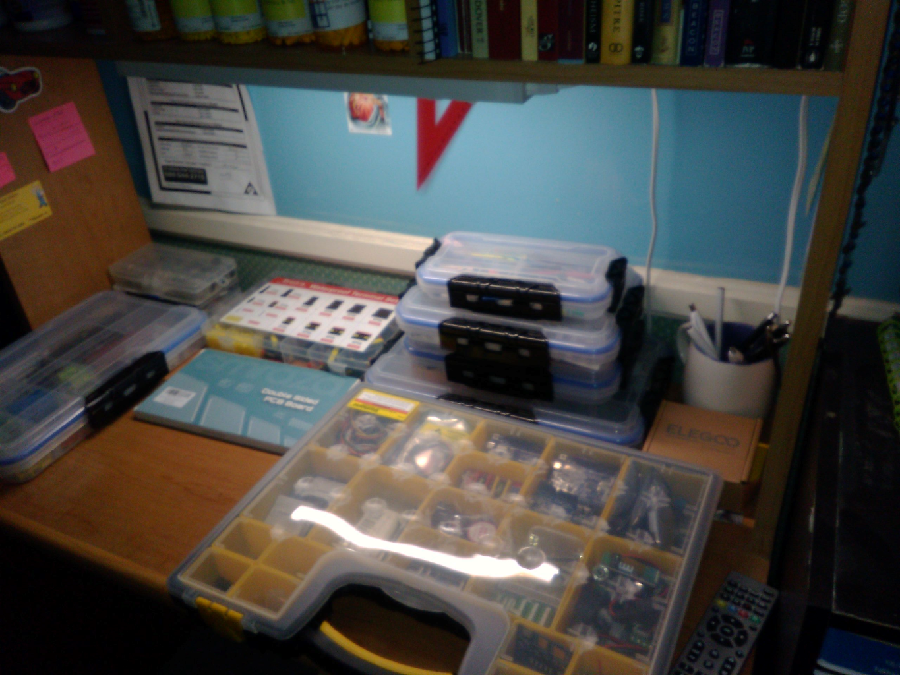

Cabling
Cabling is not a system so much as an important skill when building any project with electronics or electrical components. I have a variety of cables and connectors on hand to accommodate different types of components and projects, including jumper wires, alligator clips, and various types of connectors. I also have a selection of tools for cutting, stripping, and crimping wires, which allows me to create custom cables and connectors as needed. With my cabling skills and tools, I can ensure that my projects are properly connected and organized, which is essential for troubleshooting and maintaining them over time.

Caption for image 1
Caption for image 2
Caption for image 3
Caption for image 4